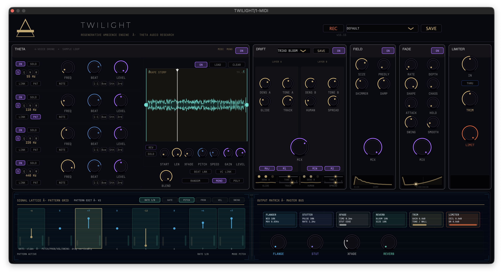

TWILIGHT is a regenerative ambience instrument from THETA Audio Research. Built around a four-voice binaural drone engine, a sample layer, harmony doubling, pattern sequencing, and a dedicated master output stage. It is designed to create immersive drones, evolving harmonic fields, sequenced motion, and finished atmospheric output inside a single instrument.
RECORDING_AND_CAPTURE
TWILIGHT includes a built-in REC function that can capture the plugin’s output directly to a chosen WAV file. This makes it easy to print long drones or processed output without leaving the laboratory workflow.
INTERFACE_LOGIC
Following the THETA Void language: absolute black, stone/charcoal telemetry, and scientific HUD influences. The interface is exploratory and atmospheric, using a focused grayscale identity.
ENGINE_ARCHITECTURE
T H E T A // THE HEART
Four-Voice Binaural Engine. THETA is the core signal organism. Designed for sustained tone and psychoacoustic motion, each voice carries pitch and beat-rate interaction.
D R I F T // HARMONY & ENSEMBLE
Harmony Doubler / Ensemble Widener. DRIFT turns a stable source into a layered harmonic bloom. Built on a "body and halo" architecture, it can reinforce a source with stable doubles.
F I E L D // SPATIAL BLOOM
Spatial Expansion / Shimmer Engine. Built around comb and allpass diffusion networks. FIELD allows audio to move away from the speakers to become a surrounding environment.
F A D E // MOTION ENGINE
Gate / Stutter / Sidechain hybrid. Reshapes the way a signal arrives and retreats using SHAPE and CHAOS parameters to create breathing envelopes.
M A S T E R B U S // OUTPUT MATRIX
Final Modulation Stage. The place where the instrument’s signal is performed and dramatized. Features core treatments: FLANGE, STUT, XFADE, and REVERB.
O U T P U T // FINISHING STAGE
Mastering Wall & Limiter. A true end-of-chain sculpting section including the THRU system for external audio processing and the final LIMIT boundary.
WHOLE_PLUGIN_SPECIFICATIONS
- Core Engine 4-voice THETA binaural drone engine + V5 sample layer
- Sequencer Signal Lattice [Gate / Pitch / Prob / Velocity / Swing]
- Harmony Modes UNI, OCT+/-, 5TH, MAJ, MIN, SUS, CLSTR
- Master Bus Flanger, Stutter, Reverb, Brick-Wall Limiter
TELEMETRY
- Platform macOS [AU / VST3] // 64-bit
- Recording Direct output capture to WAV via REC function
- Aesthetic THETA Void [Brutalist Grayscale / Scientific HUD]
- Manufacturer THETA Audio Research // 2026